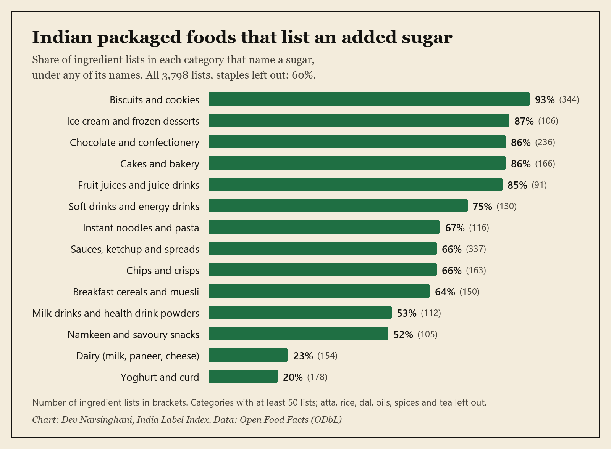
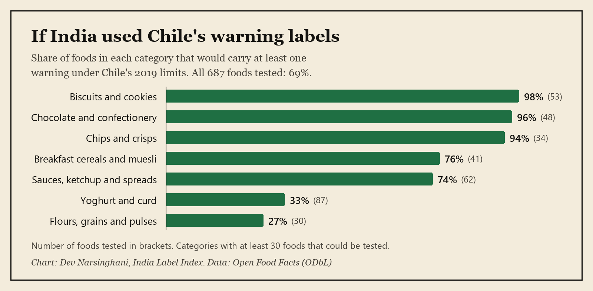
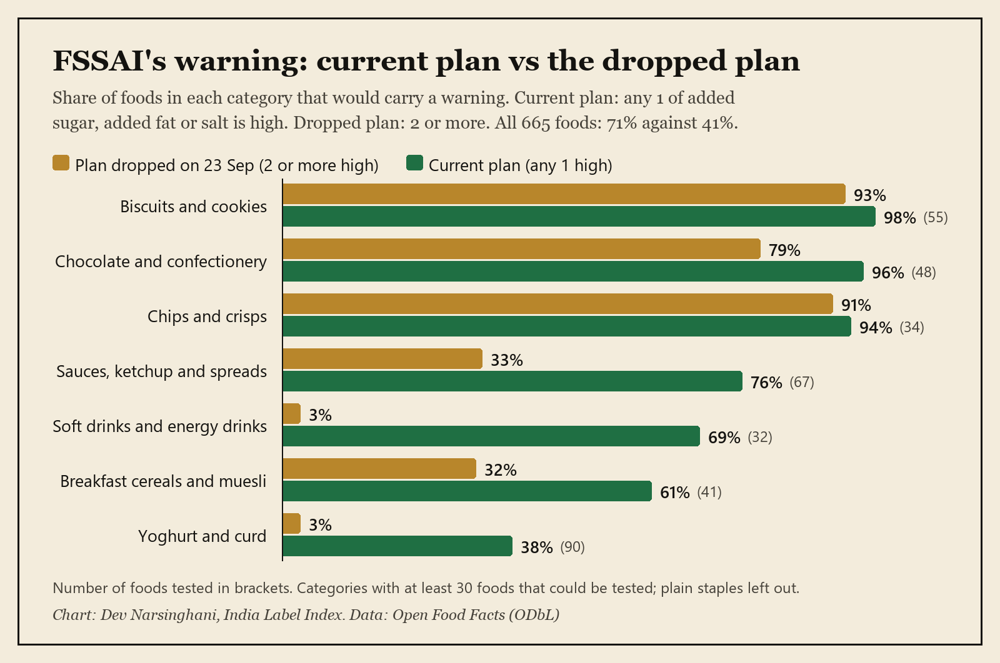
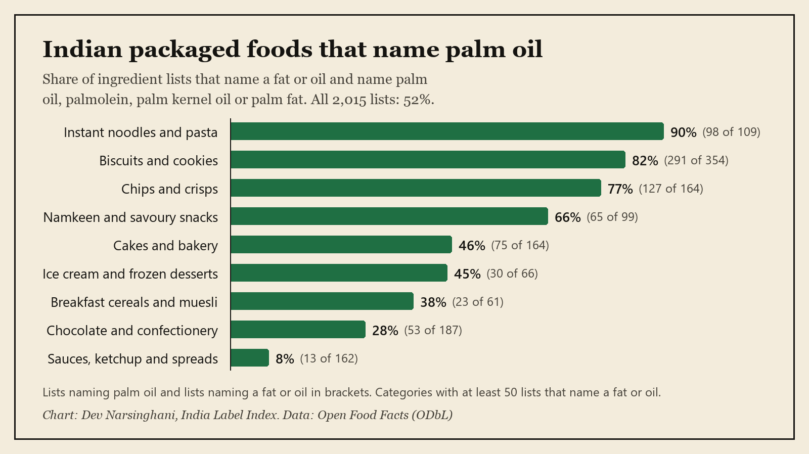
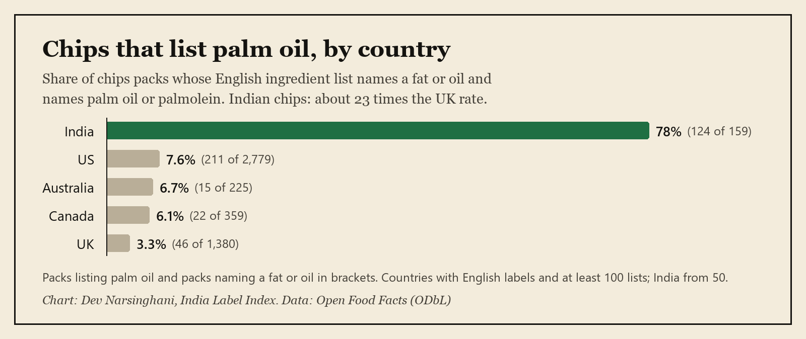
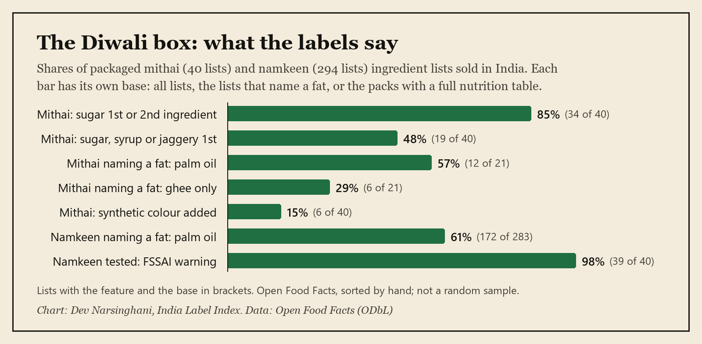

Press kit
For journalists covering the India Label Index, Dev Narsinghani's open study of Indian food labels. Each study below has its headline number with the number of foods behind it, lines you can quote, a chart, the data and a citation.
About Dev · Added sugar · Chile's warning labels · FSSAI's warning labels · Palm oil · India vs the world · The Diwali box · Method · Caveat · How to cite · Contact
About Dev

Dev Narsinghani is a health changemaker and operator from Mumbai, India. He makes honest food easy to choose. He built the India Label Index, an open study of Indian packaged-food labels from Open Food Facts data, and the free Label Checker, which finds every sugar name in an ingredient list and turns sodium into salt. He has been Chief of Staff to Revant Himatsingka at Food Pharmer and on the founding team at Only What's Needed (OWN) since 2025. Before that he worked at Indus Insights, Grant Thornton Bharat and Sploot. He studied commerce at Shri Ram College of Commerce (SRCC), University of Delhi.
The six studies
1. Added sugar
60%of 3,798 Indian packaged-food ingredient lists name an added sugar (6 in 10).
Lines you can quote
- 6 in 10 Indian packaged foods list an added sugar, and 4 in 10 have a sugar in the first 3 ingredients (60% and 42% of 3,798 ingredient lists).
- 2 in 10 list sugar under 2 or more names (19%). In biscuits it is 70% of 344 lists, and 49% of biscuits list invert sugar.
- Instant noodles and pasta have a median of 2.5 g of salt in 100 g (43 packs with a salt value). That is half of the 5 g a day WHO sets for adults.


- Chart: PNG, 1600 x 1178 · the chart's numbers (CSV) · share card (PNG, 1200 x 630)
- Study page: devnarsinghani22.github.io/india-label-index/
- Data: Category table (CSV) · All results (JSON) · Code: analyse.py

2. Chile's warning labels
69%of 687 Indian packaged foods tested would carry at least one warning under Chile's limits.
Lines you can quote
- Under Chile's warning-label limits, 69% of 687 Indian packaged foods tested would carry at least one warning, and 53% would carry two or more.
- Biscuits would be hit hardest: 98% would carry a warning (53 tested). Chips: 94% (34 tested).
- The most common warning would be high in calories, on 54% of foods. High in sugar would be on 39%.
Chile's limits, in force since 2019, were the test before FSSAI named its own. Chile's warnings are black octagons. For FSSAI's own limits, see the next study.


- Chart: PNG, 1600 x 786 · the chart's numbers (CSV) · share card (PNG, 1200 x 630)
- Study page: devnarsinghani22.github.io/india-label-index/warning-labels/
- Data: All results (JSON) · Code: warnings.py

3. FSSAI's warning labels
71%of 665 Indian packaged foods tested would carry FSSAI's proposed warning under its current plan, against 41% under the plan it dropped.
Lines you can quote
- 71% of 665 Indian packaged foods would carry FSSAI's proposed warning under its current plan, where one high nutrient is enough. Under the 2-nutrient plan it dropped on 23 September, it would have been 41%.
- Soft drinks show the switch most clearly: 69% are high in added sugar, but only 3% would have been warned under the 2-nutrient plan (32 tested).
- Yoghurt and curd go from 3% to 38% (90 tested). Biscuits and chips barely change, because most are already high in two things.
The limits are the ICMR-NIN 2024 ones that FSSAI cited to the Supreme Court. The court reserved its order on 28 September 2026, so the final limits may change.


- Chart: PNG, 1600 x 1062 · the chart's numbers (CSV) · share card (PNG, 1200 x 630)
- Study page: devnarsinghani22.github.io/india-label-index/fssai-warning-labels/
- Data: All results (JSON) · Code: fssai.py

4. Palm oil
52%of Indian ingredient lists that name a fat or oil name palm oil (1,051 of 2,015).
Lines you can quote
- Palm oil is the fat named most on Indian packaged food: 52% of 2,015 ingredient lists that name a fat or oil name palm oil (1,051 of 2,015).
- 9 in 10 instant noodles name palm oil (90% of 109 lists), and 8 in 10 biscuits (82% of 354).
- 7% of these lists say only "vegetable oil" and never name the plant (145 of 2,015), and 15% list a hydrogenated, interesterified or shortening fat (309 of 2,015).
A name in the list does not say how much of that fat is in the pack.


- Chart: PNG, 1600 x 898 · the chart's numbers (CSV) · share card (PNG, 1200 x 630)
- Study page: devnarsinghani22.github.io/india-label-index/palm-oil/
- Data: All results (JSON) · Code: fats.py

5. India vs the world
78%of Indian chips list palm oil (124 of 159 packs), against 3.3% in the UK (46 of 1,380) and 7.6% in the US (211 of 2,779).
Lines you can quote
- Indian chips are about 23 times as likely as British chips to list palm oil: 78% (124 of 159 packs) against 3.3% in the UK (46 of 1,380).
- The median Indian chips pack has 13.8 g of saturated fat in 100 g (58 packs), against 2.4 g in British chips (1,773 packs). This data shows the gap, not what causes it.
- 45% of Indian biscuits list 5 or more additives (158 of 350 packs), the most of the 12 countries with enough data. The UK is 21% (337 of 1,612) and the US 33% (3,652 of 11,231).
Chips here means the packet kind, which the British call crisps.



6. The Diwali box
85%of packaged mithai list sugar as the first or second ingredient (34 of 40). In 19 of 40 it is the first.
Lines you can quote
- Sugar, sugar syrup or jaggery is the first ingredient in 19 of 40 packaged mithai ingredient lists, and sugar is first or second in 34 of 40 (85%).
- Of 21 mithai lists that name a fat, 12 name palm oil and only 6 of the 21 use ghee alone. 6 of 40 mithai lists add a colour, and all 6 are synthetic.
- Palm oil is named in 172 of 283 namkeen lists that name a fat (61%), and 39 of 40 namkeen with a full nutrition table would carry FSSAI's proposed warning.
Mithai bought loose from a sweet shop has no ingredient list, so this covers packaged boxes. Diwali is on 8 November 2026. One brand is 67 of 294 namkeen lists; the study page gives the numbers without it.


- Chart: PNG, 1600 x 786 · the chart's numbers (CSV) · share card (PNG, 1200 x 630)
- Study page: devnarsinghani22.github.io/india-label-index/diwali/
- Data: Every number with its count (CSV) · All results (JSON) · Code: diwali.py

Method in short
- Source: Open Food Facts, the open food database. The India-only studies use every product tagged as sold in India (21,189 products, downloaded on 1 October 2026) and read the ones with an ingredient list in English. India vs the world uses one download of 6 October 2026, for India and 15 other countries.
- Ingredient lists are read with the same rules as the free Label Checker: every name for sugar, salt (or sodium times 2.5), and each fat or oil the list names. The matches were checked by hand against the lists, and the rules fixed where they were wrong.
- The warning-label studies also need a full nutrition table, so they rest on fewer foods than the ingredient studies.
- The headlines leave out plain staples such as atta, rice, dal, oils, spices and tea where the study page says so. Each study page lists exactly what is in and out.
- Results are by food category. No brand or product is named or rated.
- The code is public, so anyone can check or rerun any number: github.com/devnarsinghani22/india-label-index
The Open Food Facts caveat
All numbers come from Open Food Facts, a food database filled in by volunteers. They show the packs people have added, not a random sample of the shops in any country. Some entries are old or have typing errors, so treat a category number as rough when the number of foods behind it is small.
The data is under the Open Database License (ODbL). You can reuse these numbers with credit to Open Food Facts and the India Label Index.
How to cite
In a story: Source: India Label Index by Dev Narsinghani, from Open Food Facts data (ODbL).
Under a chart: Chart: Dev Narsinghani, India Label Index. Data: Open Food Facts (ODbL).
Full citations, one per study:
Narsinghani, D. (2026). India Label Index 2026: What 3,798 Indian food labels say about sugar and salt. https://devnarsinghani22.github.io/india-label-index/. Data from Open Food Facts (ODbL). DOI: 10.5281/zenodo.23245928.
Narsinghani, D. (2026). If India used Chile's warning labels: 7 in 10 Indian packaged foods would carry a warning label. India Label Index 2026. https://devnarsinghani22.github.io/india-label-index/warning-labels/. Data from Open Food Facts (ODbL). DOI: 10.5281/zenodo.23245928.
Narsinghani, D. (2026). If FSSAI's warning labels started today. India Label Index 2026. https://devnarsinghani22.github.io/india-label-index/fssai-warning-labels/. Data from Open Food Facts (ODbL). DOI: 10.5281/zenodo.23245928.
Narsinghani, D. (2026). Which fat is in the pack? India Label Index 2026. https://devnarsinghani22.github.io/india-label-index/palm-oil/. Data from Open Food Facts (ODbL). DOI: 10.5281/zenodo.23245928.
Narsinghani, D. (2026). India vs the world. India Label Index 2026. https://devnarsinghani22.github.io/india-label-index/india-vs-world/. Data from Open Food Facts (ODbL). DOI: 10.5281/zenodo.23245928.
Narsinghani, D. (2026). The Diwali box. India Label Index 2026. https://devnarsinghani22.github.io/india-label-index/diwali/. Data from Open Food Facts (ODbL). DOI: 10.5281/zenodo.23245928.
The data and code are archived on Zenodo: DOI 10.5281/zenodo.23245928.
Contact
Email: dev.narsinghani@gmail.com · LinkedIn
Ask for the counts behind any number or a different cut of the data.